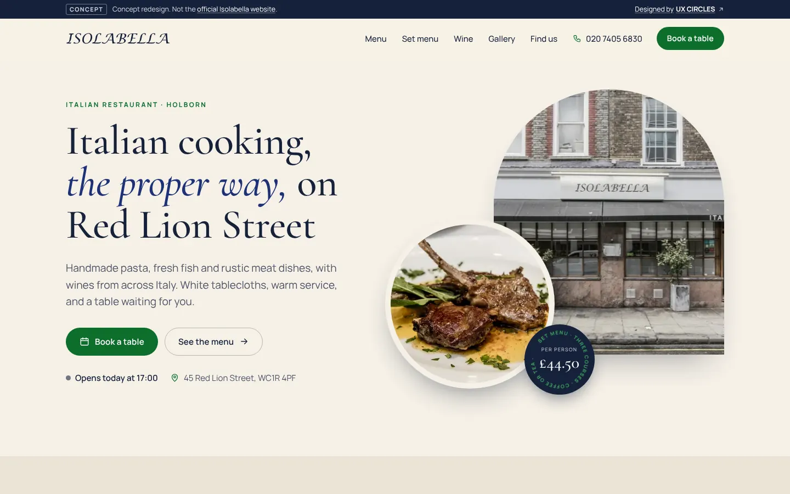
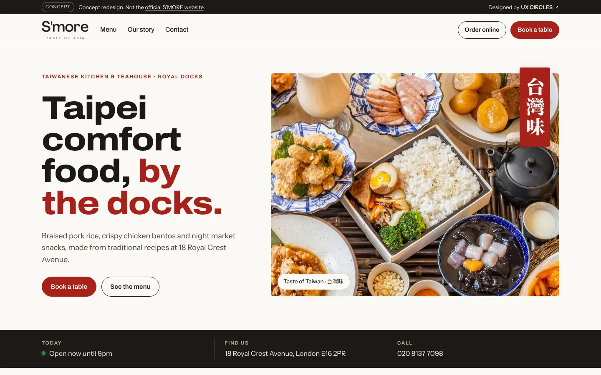
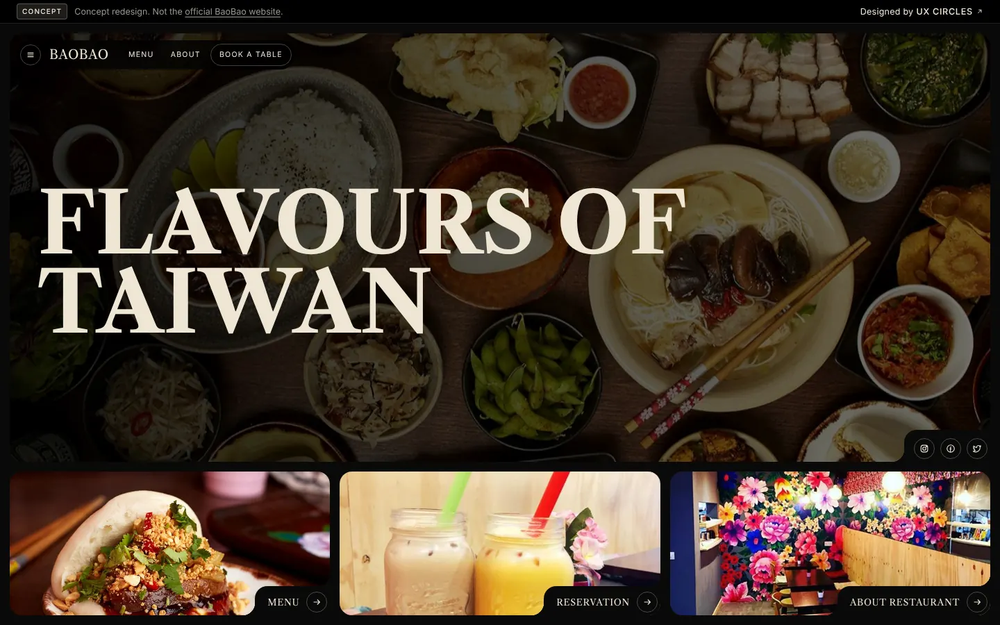

Seafood & steak · Holborn, London
The Shell
海鮮餐廳改版提案 — 英／中／法三語網站
A trilingual redesign for a seafood and steak restaurant on Southampton Row. The hero turns the signature platter into a labelled menu, and private dining gets its own enquiry page for group bookings.
View concept site
Italian restaurant · Holborn, London
Isolabella
義大利餐廳改版提案 — 套餐、酒單與訂位
A warm, editorial redesign for an Italian restaurant on Red Lion Street. Set menu, wine list and opening hours sit one tap from the homepage, with booking as the primary action on every page.
View concept site
Greek grill & taverna · Bloomsbury, London
Nostimo
希臘餐廳改版提案 — 訂位、外帶與外送一次整合
A redesign for a Greek taverna near Russell Square. Booking, takeaway and delivery links are combined into one clear decision, so guests never hunt for the right button. Includes a Chinese-language version for tourists.
View concept site
Taiwanese bao & rice bowls · Birmingham
Tiger Bites Pig
台式刈包餐廳改版提案 — 多分店、外燴與中文版
A bold redesign for a Taiwanese-inspired bao kitchen on Church Street. Built for a growing brand: multiple locations, catering enquiries, live opening hours and a Traditional Chinese version.
View concept site
Taiwanese kitchen & teahouse · Royal Docks, London
S'MORE Taste of Asia
台灣小吃餐廳改版提案 — 品牌故事與訂位
A redesign for a Taiwanese kitchen and teahouse in the Royal Docks. Tells the story behind braised pork rice and night-market snacks, with ordering, booking and today's hours visible above the fold.
View concept site
Taiwanese street food · Boxpark Croydon
BAOBAO
台灣街頭小吃改版提案 — 從 Figma 到上線
An image-led redesign for a Taiwanese street food stall at Boxpark Croydon, designed in Figma and built as a fast static site. Menu, reservations and the restaurant's story are each one tap away.
View concept site